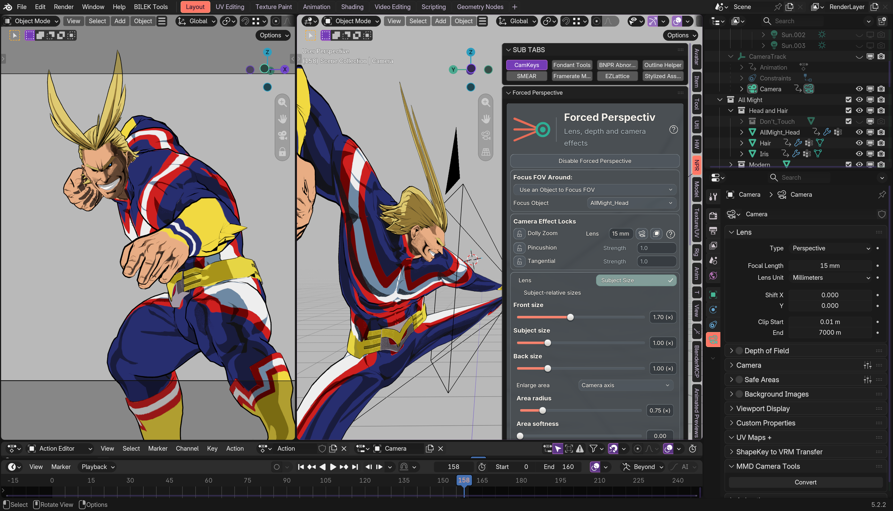

Forced Perspective → Subject Size → Enlarge area → Camera axis. Optional radius and softness control how enlargement fades away from the view centerline. Whole subject remains the default; Lens mode is unchanged.
Object/bone targeting, its driver extension, target sockets, pickers, translations and tests were removed. Schema30 has 1,249 nodes, down from 1,267.

This is the prior actual Metal capture, not a new screenshot. The trimmed graph matches its axis output exactly in the 32,001-point comparison. No fresh visual acceptance is claimed.
21 geometry/UI fixtures passed across macOS Blender 4.2.23, 4.3.2, 4.4.3, 4.5.15, 5.0.1, 5.1.2 and 5.2.2. The installed source and live schema match. The file was not saved. Physical Windows replay and arbitrary coarse-triangle collision guarantees remain outside these results.